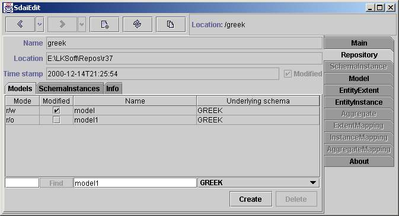
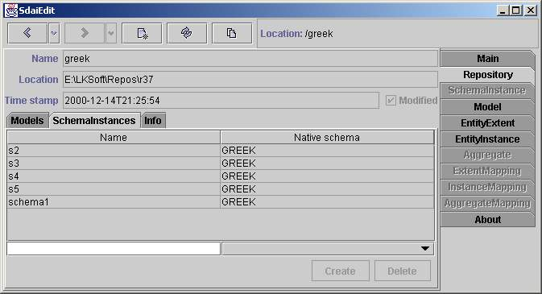
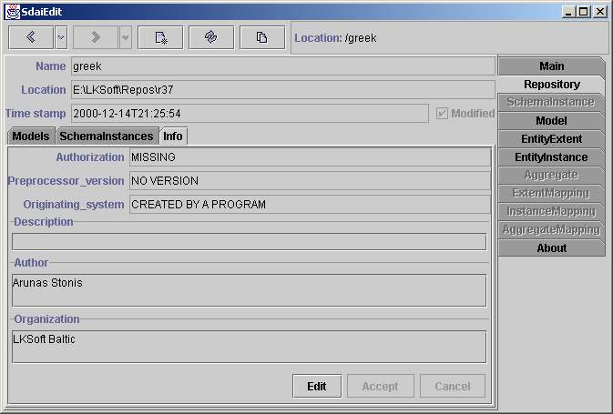

Repository Page
This page shows the contents of a repository. The name and actual location
(local or remote) is given in the upper part, followed by three sub tabs
for the containing Models, Schema Instances and the Repository Info.
Models

The Models tab shows the available models in this repository.
Table
Table consist of four columns: Mode, Modified, Name and Underlying Schema.
Mode shows current access rights to model. Available values are '-'
which means no access, 'r/o' - read only access and 'r/w' read write access.
You can change model access by clicking on the cell and from list select preferred
one. Usually there is no reason to change models access because model is automatically
switched to read only access when you open it and switched to read write
access when you edit data in model. Modified column contains check
box. If it is selected it means model is modified otherwise not. When you
commit or abort transaction(see main page) this flag
will change. Name and Underlying Schema column contains model
names and underlying schema names of model underlying schemes.
Editing line and buttons
Editing line also have for fields which is coupled with table columns. First
text field and button are made for jumping to instances by them persistent
labels. You can enter instance number (with or without '#') and after you
press 'Find' button or 'Enter' key you will jump to specified instance if
it exists. Other to fields are needed for creating model. In the first text
field you must enter name of the model and in the second you must to choose
one of available underlying schemes and after you press 'Create' button model
will be created and you will automatically jump to this model. If you want
to delete model you need to select it in the table and press 'Delete' button.
Schema Instances

The schema instances tab shows all available schema instance in this repository.
Table
Table have two columns where first is name of schema instance and second
name of native schema.
Editing line and buttons
There are two fields associated with table columns above. This is for creating
new schema instances. In the first one you enter name of schema in the second
choose native schema for this schema instance and press 'Create' button to
create it. If you want to delete schema instance you need to select preferred
one in the table and press 'Delete'.
Info

The Repository Info shows the information which is also available in a STEP
File (part-21) header. They can be modified when switching into Edit
mode. Changes are accepted by Accept or ignored with Cancel.